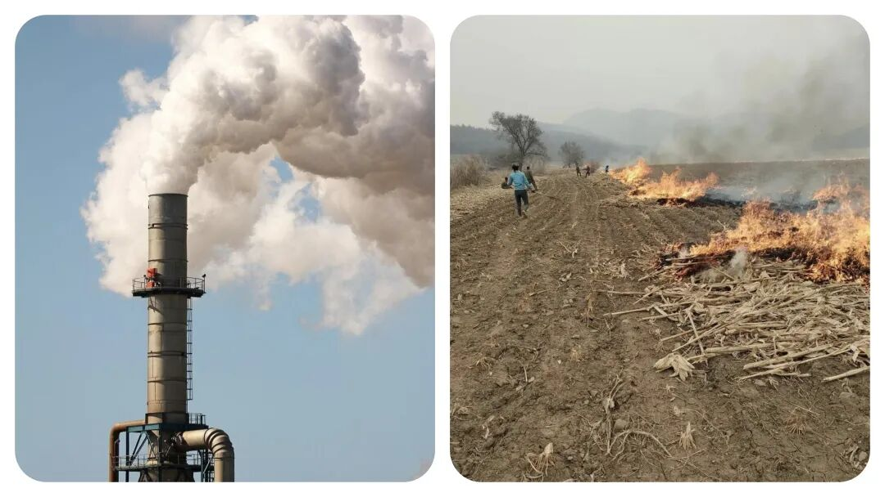
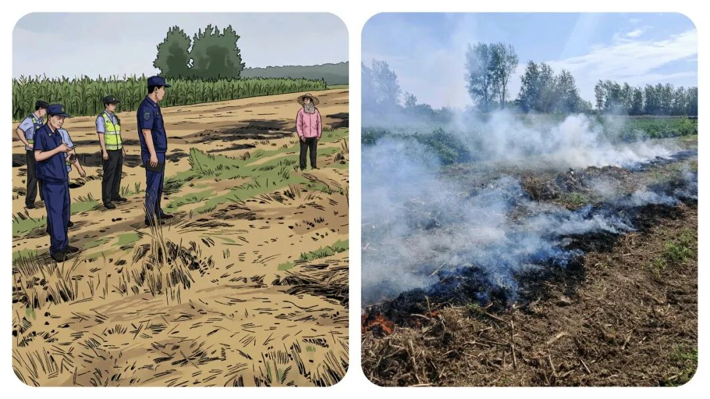
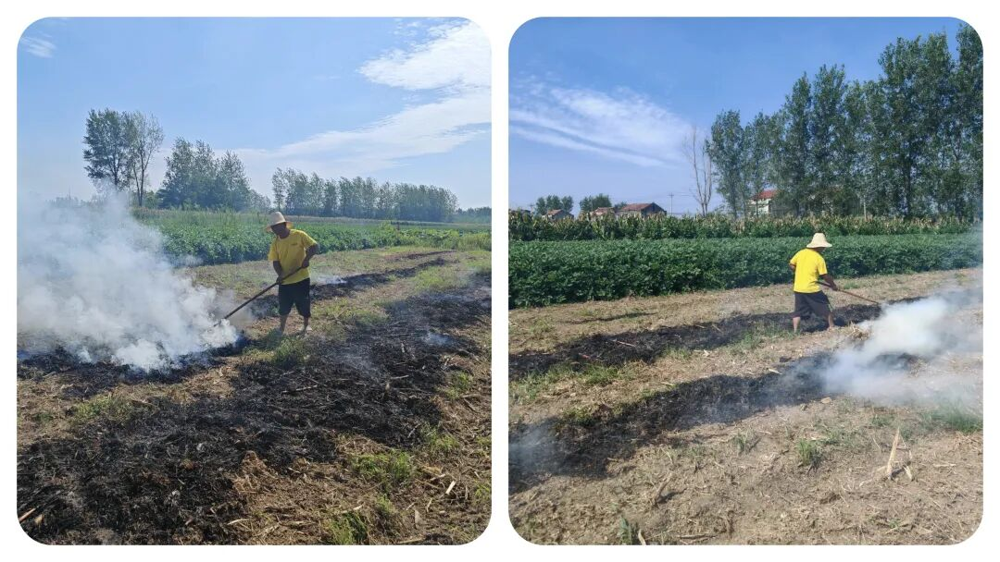
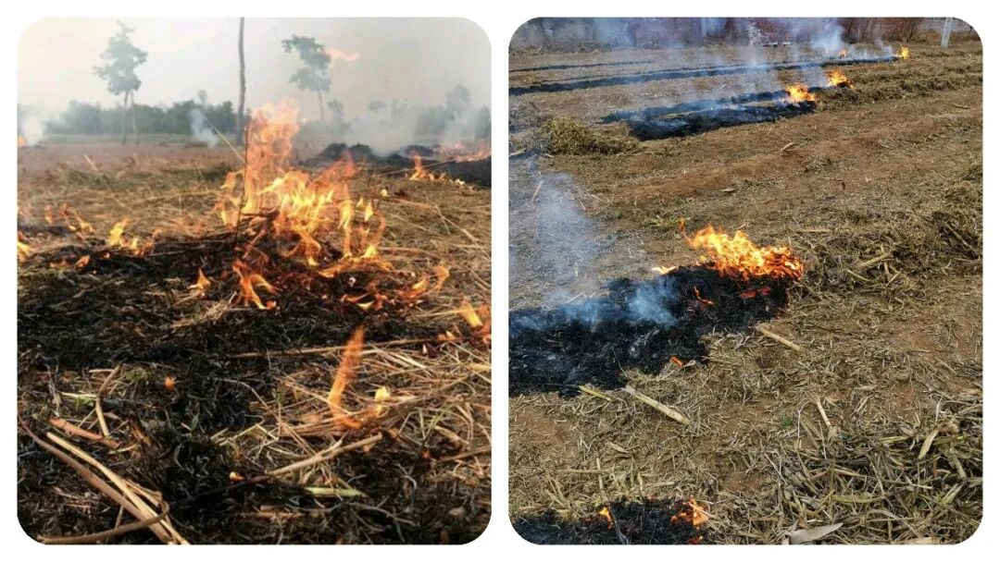
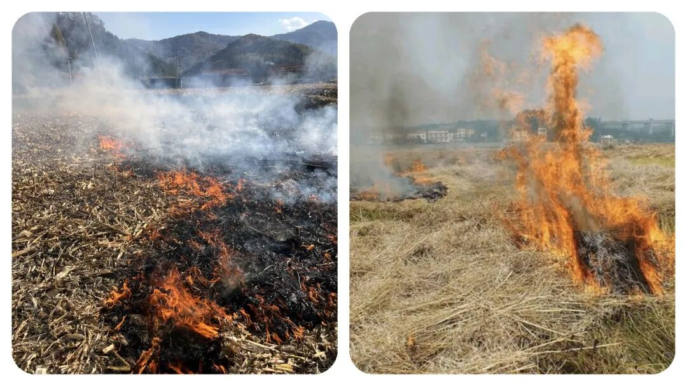

为什么乡镇要开展“秸秆禁烧”工作呢？到底该不该管？如何管？
原创
点击关注👉🏻
点击关注👉🏻
田间烟火
在小说阅读器读本章
去阅读
在小说阅读器中沉浸阅读
点击上方
蓝字
关注我们
田间烟火🔥
大家好，我是【田间烟火🔥】～
我相信
【秸秆禁烧】
这4个字，在乡镇工作的朋友，应该可以说是非常的熟悉，也可能是每年春秋季最头疼的工作之一。
今天我们就来聊聊这个话题：
“秸秆禁烧年年抓，为何田间依旧浓烟四起？
到底该不该禁烧呢？又如何做呢？这是一个非常具有争议的话题。
每年春秋，北方广阔农田里的烟雾总能让人皱眉，大家都知道源头是什么——焚烧秸秆这事老生常谈。
可你真问一句：
为啥明明政策连年升级，现场照样黑烟滚滚？
查查周围，有些地方距离机场、高速只有几百米，偏偏还是看得到明火，甚至航班都不得不备降、取消，一片混乱。
这到底是环保难，还是管理跟不上脚步？

01
政策落地难在哪
说起来，文件发得不算少，法条也新鲜刚出炉，
《生态环境法典》
明确了禁烧区和限烧区，照理比“一刀切”科学不少。
命令写明了，红线划好了，真能落地执行了吗？
有人觉得农民一定知晓政策，实际上，有些地方的干部根本没跟村民讲透，“
到底烧不烧”“具体烧哪块”、“哪片田有窗口期
”没说明白。
这就像工地分工，图纸没交底，干活靠猜，还能不出篓子？
监管存在明显空档
转头看看监管现场，尴尬的情况更直接。
机场旁边，农田里火苗直冒，哈尔滨机场去年因为雾霾导致48个航班备降、172个取消，这谁心里不怕？
可记者蹲五个月，发现关键时段基本没人看守，这就是典型的
“空档期”
。
表面上条条框框，实际上有些地带没有盯防，连临时指挥小组也没影子。
你说事因小失大，倒不是危言耸听，真出了大事，追责麻烦谁来扛？

农民有实际生产难题
但问题也不只在监管。
有农民直说“
不烧咋种地
”，这里面可不是敷衍几句能带过。
主要有两难，
一是秸秆离开地的成本高，二是收了又不知道往哪送。
一些地方，搞有机肥或者牲畜饲料的厂子收不完这些秸秆，渠道堵住了，农民收割、装运、转运全靠自己，机器租赁、人工费用一套下来不划算，干脆现场点一把图省事。
就算政府
有过补贴，手续麻烦、落实慢，还是堵在环节里
。
有意思的是，别看北方农区有这个难题，南方部分地区却逐步减少了类似问题。
有的地方几年前就推广秸秆离田大工程，敦促企业做原材料回收，再结合补贴到户的操作，烟雾情况明显缓和，说明思路对路了能起效。
反过来看，一些大粮仓省份，虽说技术推广喊得响，但基层执行没跟上，露天焚烧依然抬头。

02
现有探索的得与失
科技也算个出口。
其实现在有不少地方在试验新招数，比如用秸秆提炼石墨烯材料，100公斤秸秆能出10公斤石墨烯，这项目不只是个新闻，是真能拉动上游产业。
现在科技发达了，
用卫星遥感监测，哪个村、哪块地有火点，可以及时推送到乡镇干部手上，理论上管控压力能减小，关键得看有没有人真去核查和处置。
不过，也不能说每个地方都一团和气。
有的县区把环保指标看得比什么都重要，明面上零容忍，实际私下睁只眼闭只眼，甚至临时组织应付检查，一走了之
。
这种
“只管考核不管根本”
的态度，带来“
露头就打、检查一过又烧
”的怪圈，还没解开。

03
问题根源在哪里
秸秆焚烧带来环保污染，大家都清楚。
但它更刺眼的地方还在农业结构和社会治理上。
现在农田劳动力老龄化，年轻人外出打工多，留下的老人图方便省力；
农机合作社不愿承担风险，宁肯跟风观望。
这种实际困难，单靠政策“下发”解决不了。
说到底，最核心的障碍不在技术和法律，而是基层管理。
如果干部能常下地，和村民聊明白，把禁烧的尺度和窗口期解释清楚，再配上科学回收和合理补贴，农民没动力违规
。
偏偏部分基层喜欢坐办公室，开会比下地多，落到末端成了一纸空文。
还得提一点，并不是国家不想花钱。
有些地方投入不小，试点不少，结果一环没接上，养了一批只会统计的队伍。
投入和产出没形成闭环，烟照冒、账照亏。
对比其他地方，经济开发区，倒是通过财政、市场合力，把秸秆变废为宝。
要是真图省心，农民少干、企业多赚、环保也清洁，是不是更划算？

04
解决问题的核心
简单说，秸秆焚烧这个难题，绝不是禁令贴墙就能解决的问题。
谁能把监管、服务、技术和农民利益一块捋顺，谁就管得住火、守得住蓝天
。
不只是等督查来了临时加班，也不是遇事就罚款了事，要想根治，还是得落在
“有人真懂、有人真盯、还有利益出路”
这
三
点上。
风烟滚滚的田头，背后其实是制度执行力的一道考题，答案从来不只是喊口号。
不少地方的经验教训说明，只要想办法打通利益链条，真把田间地头看成责任田，不让治理变成纸上谈兵，那些浓烟才可能真的消散。
你怎么看待“秸秆禁烧”工作？
欢迎留言聊聊～
分享
收藏
点赞
在看